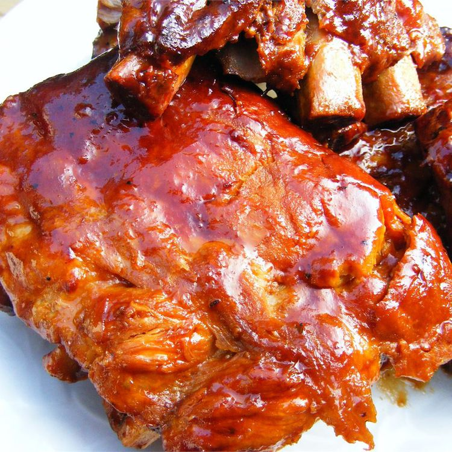

BBQ Ribs

Description
Ingredients
- 4 pounds of pork baby back ribs
- salt and pepper to taste
- 2 cups of ketchup
- 1 cup of chilli sauce
- 1/2 cup packed brown sugar
- 4 table spoons vinegar
- 2 teaspoons dried oregano
- 2 teaspoons Worcestershire sauce
- 1 dash hot sauce
Steps
- Preheat oven to 400 degrees F (200 degrees C)
- Season ribs with salt and pepper. Place in a shallow baking pan. Brown in oven 15 minutes. Turn over, and brown another 15 minutes; drain fat.
- In a medium bowl, mix together the ketchup, chili sauce, brown sugar, vinegar, oregano, Worcestershire sauce, hot sauce, and salt and pepper. Place ribs in slow cooker. Pour sauce over ribs, and turn to coat.
- Cover, and cook on Low 6 to 8 hours, or until ribs are tender.
Back